1. 거래명세서 관리
이 화면은 거래명세서를 수정 및 관리하는 화면으로 청구된 의뢰 목록과 금액을 상태별로 확인할 수 있습니다.
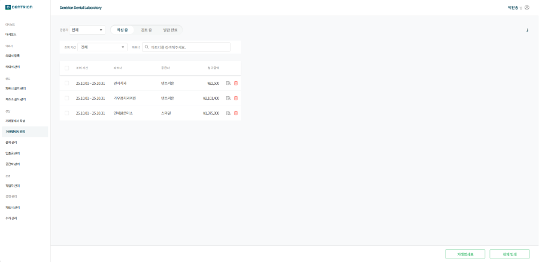
1-1. 거래명세서 상태
1-1-1.거래명세서 상태
1.[작성중] : 의뢰서 등록 시 자동으로 해당 기간 거래명세서가 생성되고 의뢰서가 쌓이는걸 확인할 수 있습니다.
2.[검토중] : 매출 확정 전, 검토 단계인 거래명세서를 확인할 수 있습니다.
3.[발급 완료] : 매출 확정된 거래명세서를 확인할 수 있습니다.
1-2.작성중
1-2-1.공급자
원하는 공급자의 거래명세서만 확인할 수 있습니다.

1-2-2.조회 기간
원하는 기간의 거래명세서를 상세 검색할 수 있습니다.
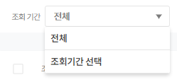
1-2-3.파트너 검색
원하는 파트너의 거래명세서만 확인할 수 있습니다.

1-2-4.초기화
조회 기간 또는 파트너 선택 시 초기화 버튼이 생성되며, 클릭 시 필터 값이 초기화됩니다.
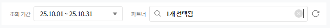
1-2-5.거래명세서 등록
조회기간 기준 내림차순으로 정렬되며 동일한 기간 내에서는 최신순으로 정렬됩니다.
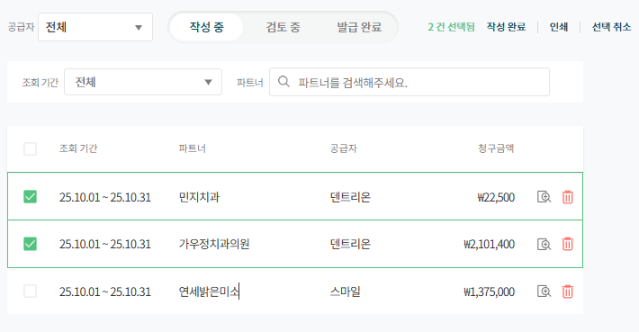
1.[체크 박스] : 거래명세서를 선택하면 선택된 수량이 표시되며 거래명세서를 일괄 작성 완료 및 거래명세서 인쇄를 할 수 있습니다.
선택 해제 버튼을 클릭하면 선택된 거래명세서가 모두 해제됩니다.
2.[조회 기간] : 거래명세서의 거래 기간으로 조회 종료일 기준 내림차순으로 정렬됩니다
3.[파트너] : 거래명세서의 청구되는 파트너명입니다.
4.[공급자] : 파트너와 연결된 공급자명입니다.
5.[청구 금액] : 모든 합산 내역을 반영한 최종 결제 금액입니다.
6.[상세 보기] : 거래명세서의 상세 내역을 확인할 수 있습니다.
7.[삭제] : 거래명세서를 삭제할 수 있습니다. 거래명세서에 포함된 의뢰서는 삭제되지 않습니다.
1-2-6.인쇄물
[작성 중] 상태 우측 하단에 거래명세표, 거래명세서 전체 인쇄 기능을 사용할 수 있습니다.
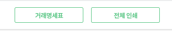
[거래명세표] : 날짜 지정하여 하루 거래명세표를 출력할 수 있습니다.
거래명세표 인쇄 예시
[전체 인쇄] : 지정한 조회 기간내에 있는 거래명세서를 모두 인쇄 할 수 있습니다.
전체 인쇄 예시
1-3.검토중
1-3-1.공급자
원하는 공급자의 거래명세서만 확인할 수 있습니다.
1-3-2.조회 기간
접속일 기준 1일~말일로 기본값이 설정되있습니다.
원하는 기간의 거래명세서를 상세 검색할 수 있습니다.
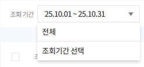
1-3-3.파트너 검색
원하는 파트너의 거래명세서만 확인할 수 있습니다.

1-3-4.초기화
조회 기간 또는 파트너 선택 시 초기화 버튼이 생성되며, 클릭 시 필터 값이 초기화됩니다.

1-3-5.거래명세서 목록
조회 기간 기준 내림차순으로 정렬되며 동일한 기간 내에서는 최신순으로 정렬됩니다.
거래명세서에 포함된 의뢰 중 포장 완료 처리되지 않은 의뢰가 있을 경우, 해당 의뢰는 상단에 붉은색으로 강조 표시되어 우선 표시됩니다.
모든 의뢰가 포장 완료 처리되면, 표시가 해제되며 목록은 기존 정렬 방식으로 복귀합니다.
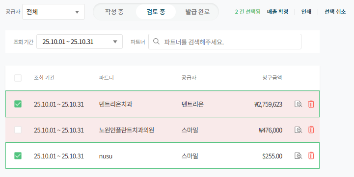
1.[체크 박스] : 거래명세서를 선택하면 선택된 수량이 표시되며 거래명세서를 일괄 매출 확정 및 거래명세서 인쇄를 할 수 있습니다.
선택 해제 버튼을 클릭하면 선택된 거래명세서가 모두 해제됩니다.
2.[조회 기간] : 거래명세서의 거래 기간으로 조회 종료일 기준 내림차순으로 정렬됩니다.
3.[파트너] : 거래명세서의 청구되는 파트너명입니다.
4.[공급자] : 파트너와 연결된 공급자명입니다.
5.[청구 금액] : 모든 합산 내역을 반영한 최종 결제 금액입니다.
6.[상세 보기] : 거래명세서의 상세 내역을 확인할 수 있습니다.
7.[삭제] : 거래명세서를 삭제할 수 있습니다. 거래명세서에 포함된 의뢰서는 삭제되지 않습니다.
1-3-6.매출 확정
거래명세서 검토가 끝난 뒤에 매출 확정을 하여 [발급 완료] 처리를 할 수 있습니다.
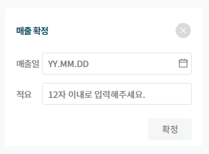
1.[매출일] : 거래명세서의 매출이 확정된 일자입니다.
2.[적요] : 거래명세서의 매출 확정 시 입력한 내용입니다.
3.[확정] : 모든 입력값을 작성 시 확정 버튼이 활성화됩니다.
1-3-7.인쇄물
[검토 중] 상태 우측 하단에 거래명세표, 거래명세서 전체 인쇄 기능을 사용할 수 있습니다.
1.[매출전표] : 지정한 조회 기간내에 있는 거래명세서의 매출전표를 출력할 수 있습니다.
매출전표 인쇄 예시
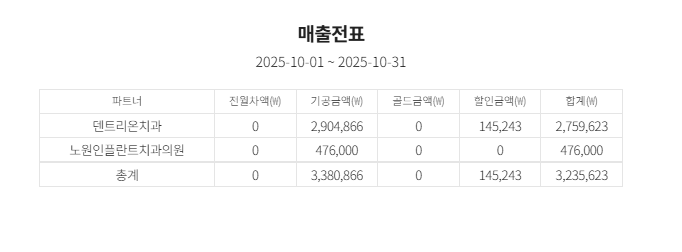
2.[품목별 매출표] : 지정한 조회 기간내에 있는 거래명세서의 품목별 매출표를 출력할 수 있습니다.
매출전표 인쇄 예시
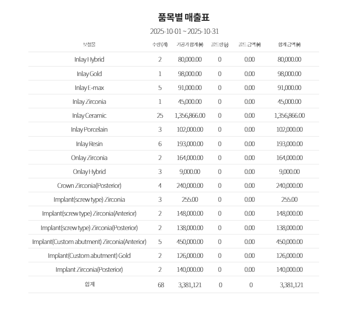
3.[전체 인쇄] : 지정한 조회 기간내에 있는 거래명세서를 모두 인쇄 할 수 있습니다.
전체 인쇄 예시
1-4.발급 완료
1-4-1.공급자
원하는 공급자의 거래명세서만 확인할 수 있습니다.

1-4-2.매출일 조회
원하는 기간의 매출 확정된 거래명세서를 상세 검색할 수 있습니다.
1-4-3.파트너 검색
원하는 파트너의 거래명세서만 확인할 수 있습니다.
1-4-4.초기화
조회 기간 또는 파트너 선택 시 초기화 버튼이 생성되며, 클릭 시 필터 값이 초기화됩니다.
1-4-5.거래명세서 목록
매출일 기준 내림차순으로 정렬되며 동일한 기간 내에서는 최신순으로 정렬됩니다.
거래명세서에 포함된 의뢰 중 포장 완료 처리되지 않은 의뢰가 있을 경우, 해당 의뢰는 상단에 붉은색으로 강조 표시되어 우선 표시됩니다.
모든 의뢰가 포장 완료 처리되면, 표시가 해제되며 목록은 기존 정렬 방식으로 복귀합니다.
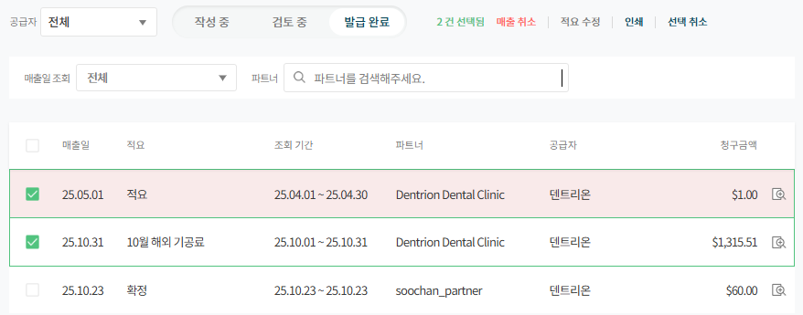
1.[체크박스]: 거래명세서를 선택하면 선택된 수량이 표시되며 거래명세서를 일괄 인쇄할 수 있습니다.
선택 해제 버튼을 클릭하면 선택된 거래명세서가 모두 해제됩니다.
a.매출 취소 : 일괄 매출 취소가 가능하지만 이미 결제 처리된 거래명세서는 매출 취소가 불가능합니다.
b.적요 수정 : 일괄 적용 수정이 불가능합니다.
2.[매출일] : 거래명세서의 매출이 확정된 일자입니다.
3.[적요] : 거래명세서의 매출 확정 시 입력한 내용입니다.
4.[조회 기간] : 거래명세서의 거래 기간입니다.
5.[파트너] : 거래명세서의 청구되는 파트너명입니다.
6.[공급자] : 파트너와 연결된 공급자명입니다.
7.[청구 금액] : 모든 합산 내역을 반영한 최종 결제 금액입니다.
8.[상세 보기] : 거래명세서의 상세 내역을 확인할 수 있습니다.
1-4-6.인쇄물
[발급 완료] 상태 우측 하단에 거래명세표, 거래명세서 전체 인쇄 기능을 사용할 수 있습니다.
[매출전표] : 지정한 조회 기간내에 있는 거래명세서의 매출전표를 출력할 수 있습니다.
[품목별 매출표] : 지정한 조회 기간내에 있는 거래명세서의 품목별 매출표를 출력할 수 있습니다.
[전체 인쇄] : 지정한 조회 기간내에 있는 거래명세서를 모두 인쇄 할 수 있습니다.
(인쇄 방식은 검토중과 동일함으로 예시 생략)
1-5.거래명세서 상세 보기
1-5-1.상태별 상세 보기
[작성 중]
해당 거래명세서의 의뢰가 자동으로 쌓이는 상태이기 때문에 포장 미완료, 히스토리 기능은 확인할 수 없습니다.
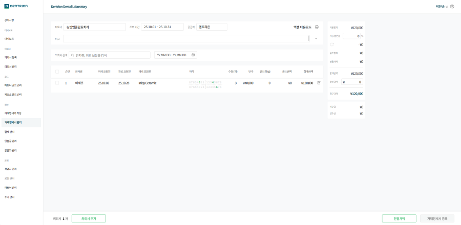
[검토 중]
작성 중 상태에서 작성 완료 처리되어 검토 중인 거래명세서의 경우 수정 사항이 있을 때 히스토리 기능과 포장 미처리 기능을 사용할 수 있습니다.
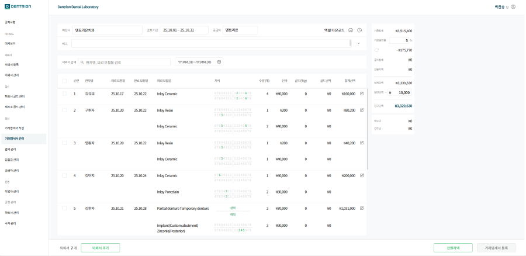
[발급 완료]
매출 확정 처리된 거래명세서 상세 보기의 경우 비고란 및 의뢰서 수정은 가능하지만 청구 금액에 대한 상세 금액은 수정을 할 수 없습니다.
상세 보기에서 청구 금액이 수정 되었어도 거래명세서 관리 화면에서는 매출 확정된 시점의 청구 금액으로 표시됩니다.
청구 금액을 통일하기 위해 매출 취소 후 다시 매출 확정을 해야합니다.
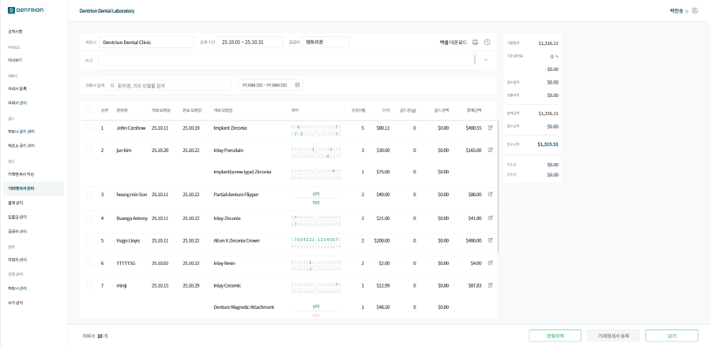
1-5-2.기능
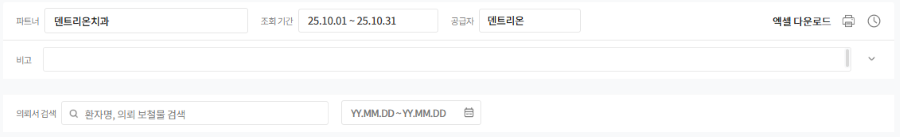
1.[파트너] : 거래명세서의 치과 정보입니다.
2.[조회기간] : 거래명세서의 거래 기간입니다.
3.[공급자] : 파트너와 연결된 공급자명입니다.
4.[엑셀 다운로드] : 거래명세서를 엑셀 형식으로 인쇄 또는 저장이 가능합니다.
5.[인쇄] : 거래명세서를 A4용지 인쇄 또는 PDF로 저장이 가능합니다.
6.[히스토리] : 거래명세서 또는 의뢰서 수정 내역이 있을 경우 과거 기록을 확인할 수 있으며 매출 확정 및 취소 시점도 확인할 수 있습니다.
히스토리 예시
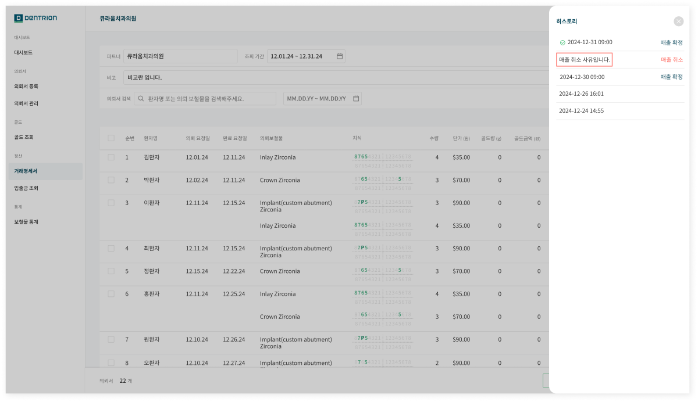
7.[비고] : 거래명세서의 참고사항을 확인할 수 있으며 거래명세서 출력 시 같이 출력됩니다.
8.[검색] : 거래명세서 내 확인하고 싶은 특정 의뢰 또는 기간을 검색해 찾아볼 수 있습니다.
1-5-3.상세 정보
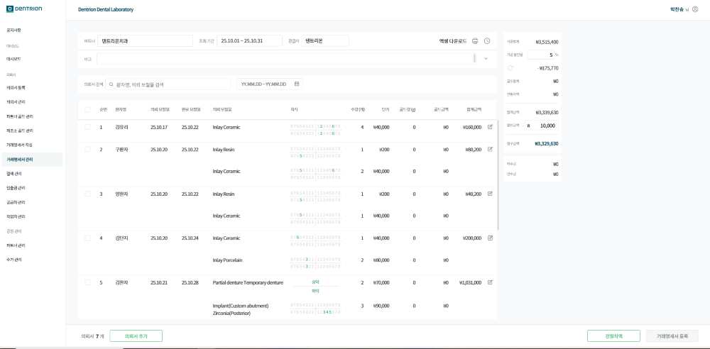
1.[의뢰서 목록] : 거래명세서에 포함된 의뢰서들의 정보를 확인할 수 있습니다.
2.[의뢰서 수정] : 의뢰서 수정이 가능합니다.
3.[의뢰서 건수] : 해당 거래명세서에 포함된 의뢰서의 총 건수를 확인할 수 있습니다.
4.[전월 차액] : 보철물 의뢰 외에 추가로 청구된 내역을 확인할 수 있습니다.
5.[거래명세서 등록] : 수정 사항이 있는 경우 버튼이 활성화되며 저장이 됩니다.
1-5-4.금액 상세 정보
1-6.거래명세서 인쇄 폼
거래명세서는 A4 용지로 출력 또는 PDF 파일로 저장이 가능합니다.
전월 차액이 있는 경우와 없는 경우의 거래명세서 인쇄 폼이 다릅니다.
전월 차액이 있는 경우 예시
처음 페이지에 전월차액 목록이 표시됩니다.
두번째 페이지부터 의뢰서 목록이 표시됩니다.
마지막 페이지에 비고 내용이 표시됩니다.
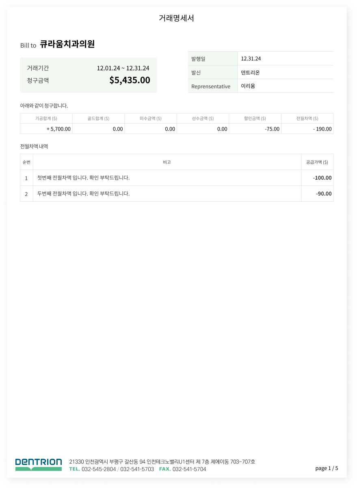